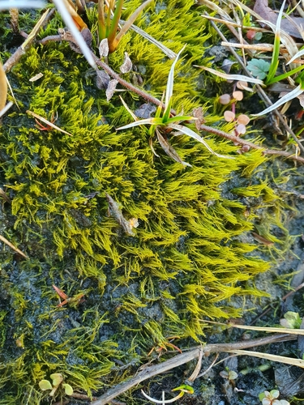

Archidiaceae
Large-Spore Moss Family
Archidiaceae is a unique, monogeneric family of mosses placed in its own class, Archidiopsida (or subclass Archidiidae within Bryopsida). It comprises the single genus Archidium. These are typically very small, often ephemeral mosses found on bare soil. The family is most famous for its highly unusual sporophyte, which is sessile (lacking a seta or pseudopodium), cleistocarpous (lacking an operculum and peristome), and produces exceptionally few (often 4-16) but extremely large spores relative to the plant size.
Overview
The Archidiaceae family, containing only the genus Archidium with about 35 species, consists of diminutive mosses that often go unnoticed. They are typically found worldwide in temperate and tropical regions, favouring open, disturbed habitats with bare, sandy or clayey soil that is seasonally moist. Due to their small size and often ephemeral nature (appearing only when conditions are right), they can be easily overlooked.
The most remarkable aspect of Archidiaceae is its reproductive strategy. Unlike the vast majority of mosses that produce thousands of tiny spores in capsules elevated on stalks (setae), Archidium produces a rudimentary, sessile capsule nestled amongst the upper leaves. This capsule lacks any specialized opening mechanism and contains only a handful of spores, but these spores are gigantic compared to those of other mosses.
This strategy of producing few, large spores is thought to be an adaptation for colonization in unstable or temporary habitats, where a large spore with more resources might have a better chance of establishing quickly. Phylogenetically, Archidiaceae represents a distinct lineage within the main class of mosses (Bryopsida), offering insights into the diversity of life history strategies within the group.
Quick Facts
- Scientific Name: Archidiaceae
- Common Name: Large-Spore Moss Family (not widely used)
- Number of Genera: 1 (Archidium)
- Number of Species: Approximately 35
- Distribution: Widespread, especially temperate and tropical regions, on bare soil.
- Evolutionary Group: Bryophytes - Mosses (Class: Archidiopsida / Subclass: Archidiidae within Bryopsida)
Key Characteristics
Growth Form and Habit
Archidium species are acrocarpous but very small, typically only 1-5 mm tall. They grow gregariously (scattered) or in loose, low tufts or patches, often appearing as a pale green or yellowish film on the soil surface. Many species are ephemeral, completing their life cycle quickly during favourable moist periods.
Stems
Stems are short, erect, and simple or sparsely branched.
Leaves
Leaves are small, typically ovate to lanceolate, and often larger and more crowded towards the stem apex, forming a comal tuft around the reproductive structures. The costa (midrib) is usually present and often strong, sometimes excurrent (extending beyond the leaf tip). Leaf cells are typically large, lax, thin-walled, and smooth (parenchymatous), especially in the upper part of the leaf.
Sporophytes (Reproductive Structures)
The sporophyte is the defining feature of the family. It is extremely reduced:
- Sessile: The capsule lacks any supporting stalk (no seta or pseudopodium) and remains embedded amongst the perichaetial leaves (modified leaves surrounding the archegonium).
- Cleistocarpous: The globose (spherical) capsule wall is thin and lacks any specialized opening mechanism like an operculum or peristome. Spores are released only when the capsule wall decays.
- Paucisporous (Few Spores): Each capsule produces remarkably few spores, typically ranging from 4 to 16, though sometimes slightly more.
- Megasporous (Giant Spores): The spores produced are exceptionally large for mosses, often exceeding 100 micrometers (µm) and sometimes reaching over 250 µm in diameter.
Spores and Dispersal
Dispersal relies on the decay of the thin capsule wall to release the few, giant spores. The large size suggests spores may not travel far by wind but have substantial energy reserves for establishment. Dispersal might also occur via movement of soil particles containing spores or plant fragments.
Habitat
Archidiaceae species are typically found on bare, mineral soil (sandy, loamy, or clayey) in open, often disturbed, sunny locations that experience seasonal moisture. Common habitats include edges of paths, fields, roadside banks, and dried pond margins.
Field Identification
Identifying Archidiaceae requires careful searching due to their small size and often ephemeral nature. Confirmation usually requires finding fertile plants and examining the unique sporophyte with magnification.
Primary Identification Features
- Habitat: Look on bare, damp mineral soil in open, sunny areas.
- Size and Habit: Very small (1-5 mm), pale green/yellowish, acrocarpous mosses, growing scattered or in low patches.
- Sporophyte (Key Feature - requires magnification): Search within the comal tufts (upper leaves) for embedded, spherical capsules. Confirm that they are sessile (no stalk) and cleistocarpous (no visible lid or teeth). If capsules are mature and ruptured, look for the presence of very few, giant spores (may appear as large granules under a hand lens).
Secondary Identification Features
- Leaf Cells (Microscopic): Relatively large, lax, smooth cells are characteristic.
- Costa: Usually strong and prominent relative to leaf size.
Seasonal Identification Tips
- Seasonality: Often appear during wetter seasons (e.g., fall, winter, spring in temperate climates) and may disappear during dry periods. Fertile plants with mature capsules are most likely found towards the end of the moist season.
Common Confusion Points
Archidiaceae can be confused with other small, acrocarpous mosses on soil:
- Pottiaceae (e.g., Weissia, Tortula): Many small soil mosses. Distinguished by having capsules on setae (even if short) and usually possessing an operculum and peristome (though sometimes rudimentary or capsules cleistocarpous in some species like Weissia, but these lack the giant spores).
- Funariaceae (e.g., Funaria, Physcomitrium): Often on disturbed soil. Distinguished by having distinct setae and typically larger, operculate capsules (sometimes cleistocarpous in Physcomitrium, but lacking giant spores).
- Bryaceae (e.g., Bryum): Some small species occur on soil. Distinguished by capsules on setae with opercula and well-developed peristomes.
- Ephemeral Mosses (e.g., Ephemeraceae): Also tiny and on soil, often with reduced sporophytes, but differ in gametophyte structure (often protonemal) and spore size/number.
The combination of sessile, cleistocarpous capsule AND few, giant spores is unique to Archidiaceae.
Field Guide Quick Reference
Look For:
- Habitat: Bare soil (sandy/clayey)
- Very small size (1-5 mm)
- Pale green / yellowish color
- Acrocarpous growth
- Capsule sessile (embedded in leaves)
- Capsule cleistocarpous (no lid/teeth)
- Very few, giant spores (mag. needed)
Key Variations:
- Leaf shape (ovate to lanceolate)
- Costa length (often strong)
- Number of spores per capsule (few)
Notable Examples
All species belong to the genus Archidium:

Archidium alternifolium
(No standard common name)
A relatively common and widespread species found in temperate regions worldwide. Typical of the genus, forming small patches on bare, damp soil. Leaves are ovate-lanceolate with a strong costa often ending just below the apex.

Archidium ohioense
(No standard common name)
Another species found in North America and other regions, often on sandy soil. Similar in appearance and habitat to A. alternifolium, differing in subtle microscopic details and sometimes spore characteristics.
Phylogeny and Classification
Archidiaceae represents a distinct evolutionary lineage within the mosses, traditionally placed in its own class, Archidiopsida, or sometimes as a basal subclass (Archidiidae) within the main moss class Bryopsida. Its exact phylogenetic position relative to other major groups within Bryopsida (like Bryidae, Dicranidae, Funariidae) is still an area of active research, but it is consistently recovered as an early diverging branch within this large clade.
The family's highly reduced sporophyte and unique spore characteristics likely represent specialized adaptations rather than purely ancestral traits, but its phylogenetic position indicates it branched off relatively early in the diversification of the Bryopsida. It provides a fascinating example of evolutionary modification of the typical moss life cycle.
Position in Plant Phylogeny
- Kingdom: Plantae
- Division: Bryophyta (Mosses)
- Class: Bryopsida (or Archidiopsida)
- Subclass: Archidiidae (if treated within Bryopsida)
- Order: Archidiales
- Family: Archidiaceae
Evolutionary Significance
Archidiaceae is significant for several reasons:
- Unique Life History Strategy: Demonstrates an extreme deviation from the typical moss reproductive strategy (few, large spores vs. many, small spores).
- Sporophyte Reduction: Provides an example of extreme simplification of the sporophyte generation (sessile, cleistocarpous).
- Basal Lineage within Bryopsida: Its phylogenetic position helps understand the early diversification events within the largest class of mosses.
- Adaptation to Ephemeral Habitats: Its characteristics are likely adaptations for rapid colonization and survival in temporary, disturbed environments.